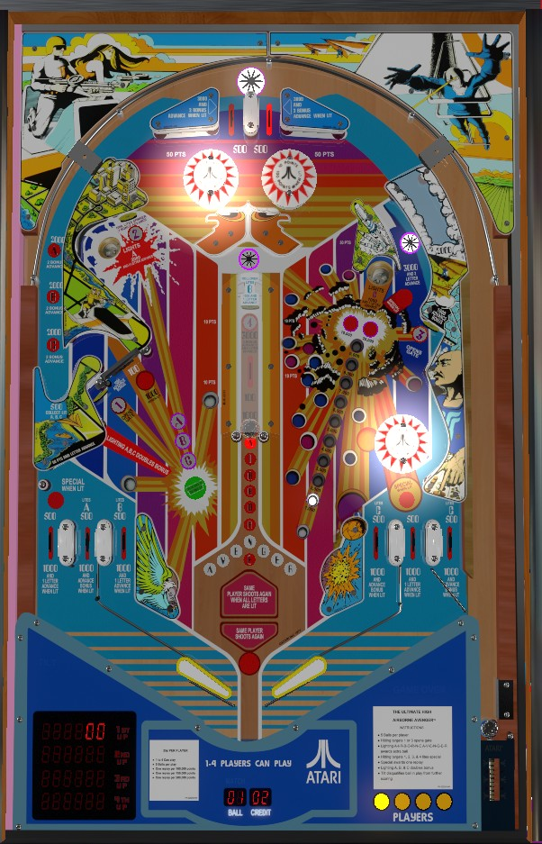

Plunge to the lit top lane for a quick 3,000 points and 3 bonus advances. The center captive ball is very dangerous, but lights the left spinner for 1,000 per spin and awards at least 3,000 points plus 3 bonus advances. Collecting A-B-C from the two saucers the the star rollover above the captive ball awards double bonus, and each A-B-C letter earned also adds 2,000 and 2 bonus advances to the kicker behind the spinner.
The below picture of Airborne Avenger's playfield was taken from the VPX recreation by DarthMarino.

Middle Earth does not show any information pertinent to the game state on its backglass. To see player scores, which player is up, the current ball number, the match number, or the credit counter, consult the apron, which has myriad 7-digit displays inlaid to show all four player scores and other necessary info.
The skill shot is a precise-power plunge to the two lanes at the top center of the table. There are no one-way gates or funnels to help a ball reach one of these lanes. One of the two lanes is lit at any time, alternating whenever a slingshot is hit, the top star rollover is pressed, or the 50-point wall switches above the bumpers are registered. The unlit top lane scores 500 points, while the lit top lane scores 3,000 points and 3 bonus advances. Making the left top lane at any point lights all three left in/out lanes, and making the right top lane at any time lights all three right in/out lanes.
Can only be fallen into from above, not shot directly. Scores 2,000 points and send the ball back toward the top lanes.
A is earned from the upper left saucer, B is earned from the star rollover just above the captive ball structure (which can only really be accessed via the top lanes), and C is earned from the upper right saucer. Collecting a letter lights that letter in two places: in white to the left of the captive ball, and in red at the far left kicker lane behind the spinner. Lighting all 3 letters in white awards double bonus for that ball. (Double bonus can also be given for free on the final ball of the game as an operator setting.) The far left kicker lane scores 500 points, plus an additional 2,000 and 2 bonus advances for each A-B-C letter currently lit red. When this value is scored, the lit red letters are reset, but the lit white letters are kept intact. You can also earn B from the near left in lane, A from the middle left in lane, and C from either right in lane.
The lit top lane and the captive ball target score 3 bonus advances. The left kicker lane scores 2 bonus advances for each letter in A-B-C currently lit red. The 1-2-3 standup targets, the left middle in lane, and both right in lanes score 1 bonus advance. Max bonus is 2x 29,000 = 58,000 points, which can match or exceed the points earned from the ball in play fairly frequently. No part of the bonus can be collected mid-ball or carried from ball to ball.
Spell Airborne Avenger awards an extra ball, which can be set to score 20,000 points instead. Letters in Airborne Avenger are shown just below the captive ball; since the N is shared between the two words, it takes only 14 letter advances instead of 15 to complete the spelling. The star rollover lane in the upper right scores 3 letter advances; the upper left saucer scores 2 letter advances; the left out lane, near left in lane, right out lane, and the B star rollover all award 1 letter advance when lit; and the upper right saucer awards 1 letter advance at any time. Airborne Avenger can be spelled multiple times in one ball, but there's no benefit to doing so unless extra ball is set to score points, because there's a maximum of 1 extra ball per ball in play.
#1 is collected at the lower left standup target; #2, in the upper left; #3, in the upper right; and #4, at the captive ball. Collecting 1 or 3 opens the gate, which converts the middle lane in the bottom left from an out lane to an in lane for one use. Collecting 2 or 4 lights the spinner on the left for 1,000 per spin instead of 100; it remains lit until the ball ends or the far left kicker behind the spinner is used. Completing 1-2-3-4 lights the Special. When Special is qualified, it can always be collected at the star rollover lane in the upper right; it will also alternate between the two out lanes when a slingshot, the top star rollover, or a 50-point wall switch is scored. Collecting the Special resets the 1-2-3-4 sequence, but does not unlight the spinner or close the gate if they are active. Likewise, unlighting the spinner or using the gate never causes the loss of any already-collected 1-2-3-4 numbers, and you can hit a target corresponding to a 1-2-3-4 number that you already have to reenable its feature.
Special can be set to score a free game, an extra ball, 20,000 points, or 30,000 points.
The captive ball lane includes both a target and a rollover switch. The rollover switch scores 100 points or 1,000 when lit, and is lit after making either top lane. The target at the end always awards 3,000 points and 3 bonus advance. A full shot to the captive ball, then, either scores 3,200 points or 5,000 points, depending on whether the rollover is lit.
Airborne Avenger has a conventional in/out lane setup, but with 3 lanes on each side instead of the usual 2.
On the left: the far lane is always an out lane, the middle lane starts as an out lane but becomes an in lane if the gate is open, and the near lane is always an in lane.
On the right: the far lane is always a free ball lane that puts the ball into the shooter lane for a replunge, the middle lane is always an out lane, and the near lane is always an in lane.
All in/out lanes score 500 points, or 1,000 when lit, and are lit by making the top lane on the same side of the table. Also, when lit, in/out lanes either add 1 letter advance or 1 bonus advance; the far left lane gives 1 letter, and the rest of the bottom lanes alternate 1 letter or 1 bonus as you go from left to right.